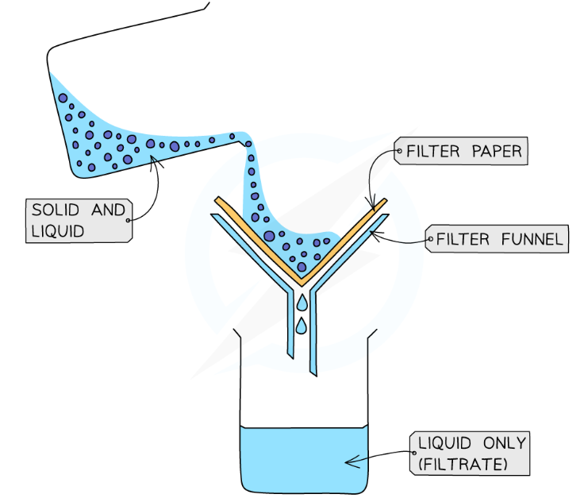
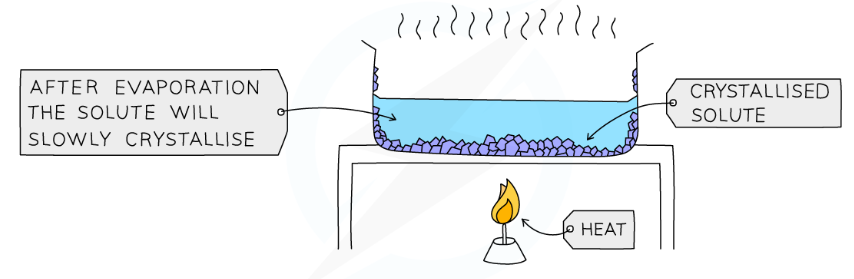
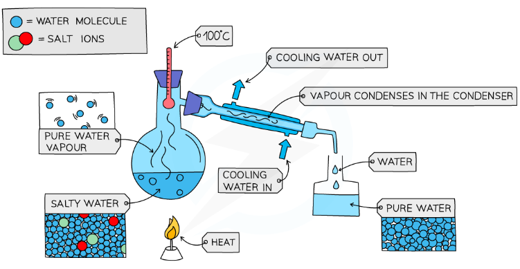
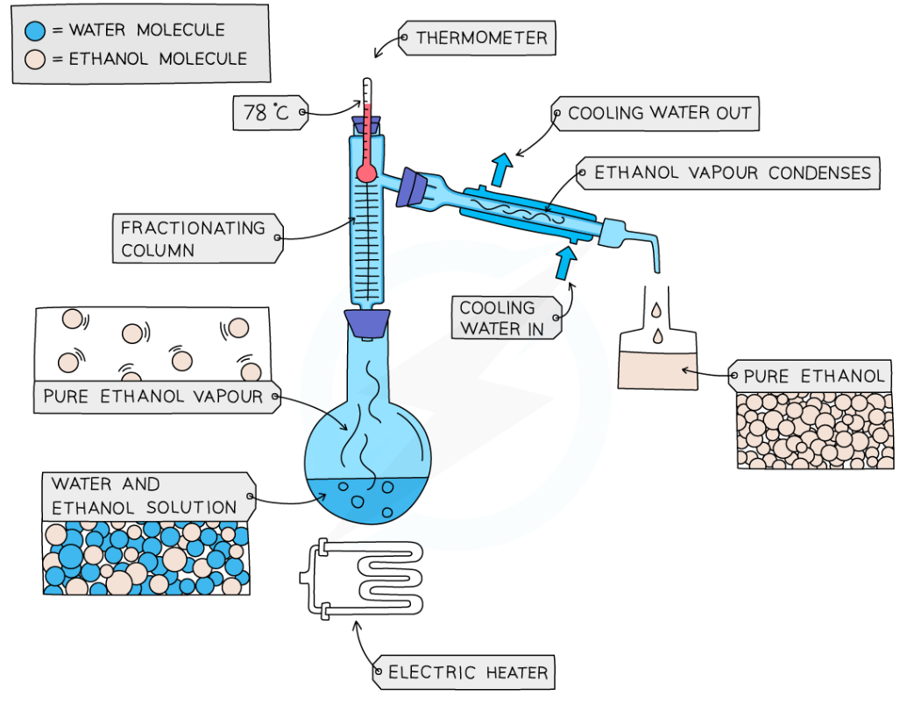
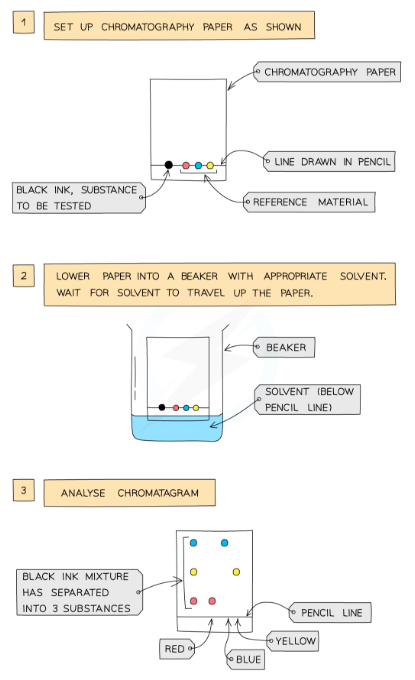

| Mixture to separate | Method | Key property being exploited |
|---|---|---|
| Insoluble solid + liquid | Filtration | Particle size (solid is too large to pass through filter paper) |
| Soluble solid from its solution (as crystals) | Crystallisation | Solubility decreases on cooling |
| Solvent from a solution (e.g. water from salt water) | Simple Distillation | Difference in boiling points between solvent and solute |
| Two or more miscible liquids with different boiling points | Fractional Distillation | Different boiling points — each fraction collected separately |
| Dyes, inks, amino acids — small amounts of mixtures in solution | Paper Chromatography | Different solubilities in mobile and stationary phase |





| Method | What is separated | Essential equipment | Key exam term |
|---|---|---|---|
| Filtration | Insoluble solid from liquid | Filter funnel, filter paper, conical flask | Residue (solid); Filtrate (liquid) |
| Crystallisation | Dissolved solid from solution | Evaporating basin, Bunsen/water bath | "Do NOT evaporate to dryness" |
| Simple Distillation | Solvent from solution | Round-bottom flask, condenser, thermometer | Thermometer at side-arm exit |
| Fractional Distillation | Miscible liquids (different b.p.) | Fractionating column with glass beads | Temperature gradient in column |
| Chromatography | Dyes / mixtures in solution | Chromatography paper, solvent, pencil | Baseline in pencil; [H] Rf value |